Get Started Quickly with WordPress
Introduction
Unresolved directive in <stdin> - include::/app/source-vxost-osx/docs/_includes/common/install-wordpress/introduction.adoc[]
Assumptions and Prerequisites
This tutorial doesn’t make a lot of assumptions, but the few that it does are important.
-
First, it assumes that you have a working VXOST installation on Mac OS X, and that your VXOST installation (including MySQL/MariaDB) is currently running. In case you don’t have this, download and install VXOST and then, once it’s installed, check that it’s all working by browsing to http://virtualhost. You should see something like this:
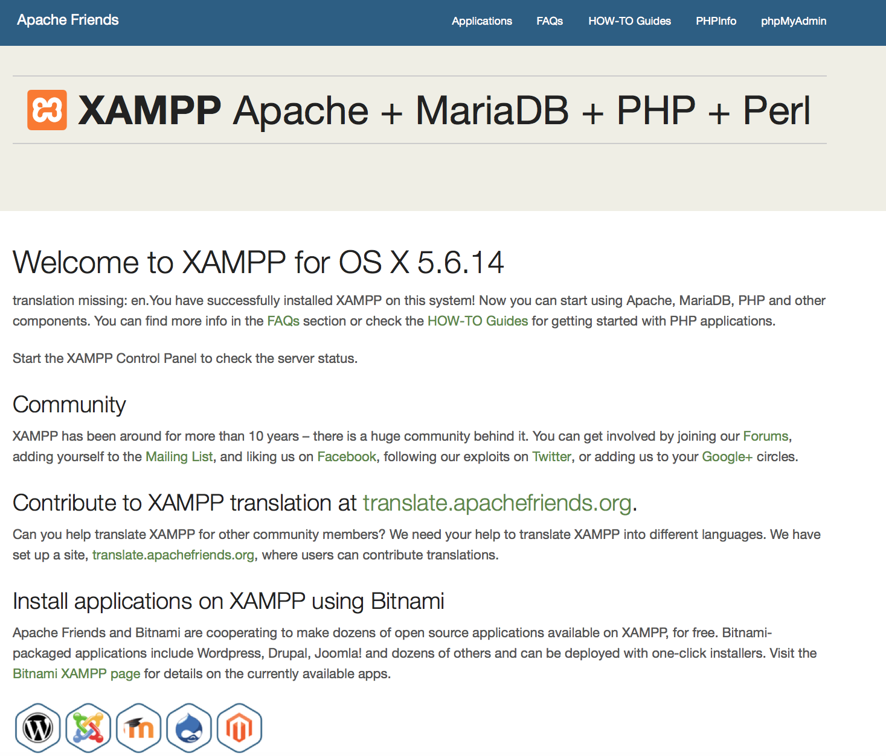
You can also check that both MySQL/MariaDB and Apache are running using the VXOST control panel:
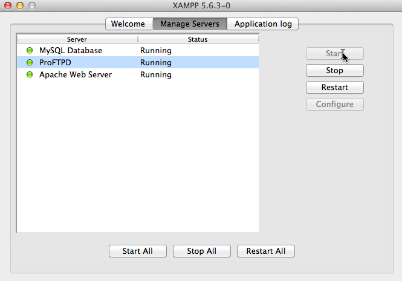
-
Second, it assumes that you’ve already downloaded the Mac OS X WordPress add-on for VXOST. In case you don’t have this, you can download it from the VXOST Add-ons page. The add-on is an executable that lets you click your way through key tasks such as configuring the WordPress administrator account and setting up WordPress email notifications.
Did you check both the boxes above? You’re good to begin!
Step 1: Install Bitnami WordPress module for VXOST
You can now begin installing WordPress on top of VXOST by following these steps:
-
Change to the directory containing the downloaded add-on and double-click the .dmg file to begin the installation process. This will launch the installer and you should see a splash screen, followed by a prompt for installation language. The installer is available in nine languages, including English, Spanish, Simplified Chinese, Korean, German and Russian. Select your language and you’ll be transferred to the main setup wizard.
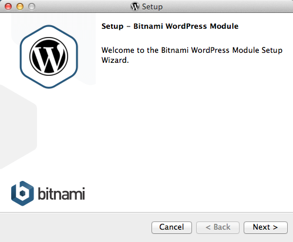
-
The WordPress add-on requires a pre-existing VXOST installation. Select your VXOST installation directory (usually, /Applications/VXOST).
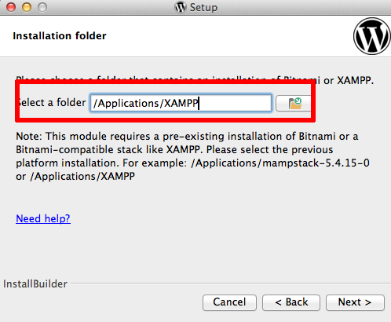
-
Next, you’ll be prompted for the administrator password. Once you enter it, the installer will be restarted with administrator privileges.
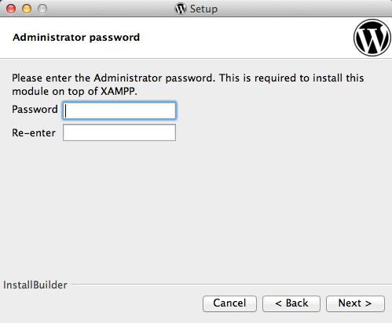
-
Repeat the previous steps and this time, you’ll be prompted to set up the WordPress administrator account. Enter a user name, real name and email address for the WordPress administrator account. Also, enter a password (minimum 6 characters) for the WordPress administrator account.
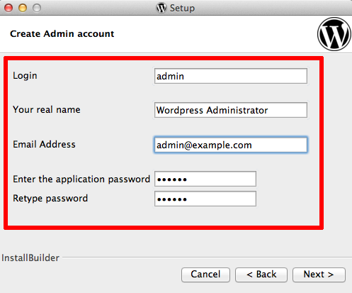
-
Next, enter a title for your WordPress blog. Don’t worry, you can change this later!
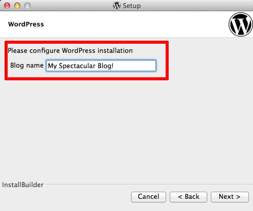
-
WordPress can optionally send you notifications on events, such as when someone comments on a post. The setup wizard lets you configure how these email notifications are sent out. You can either use a Gmail account or a custom mail server.
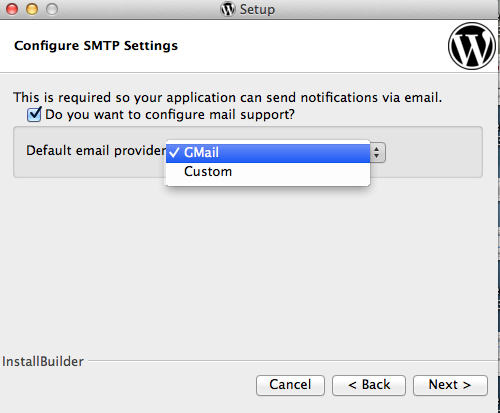
-
If you’re using a Gmail account, simply enter your complete Gmail address and account password. For security reasons, it is recommended that you set up a separate Gmail account for notifications, rather than using your regular Gmail address.
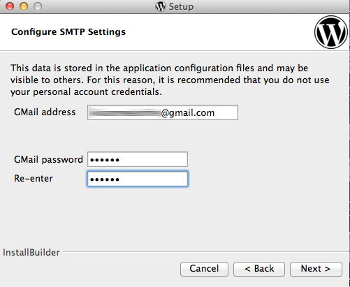
-
If you don’t have a Gmail account or if you’d prefer to use a custom mail server, enter details for the mail server, such as the account username and password, SMTP server name and port, and security configuration.
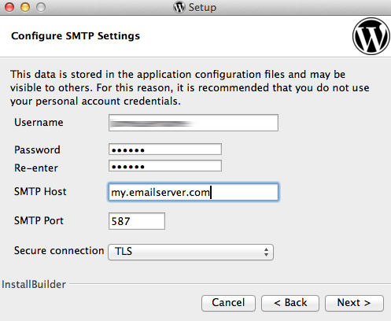
-
You’re almost done! Click Next a few times, decide whether you want to read more about Bitnami in a new browser window while the installation progresses, and the wizard will take care of the rest.
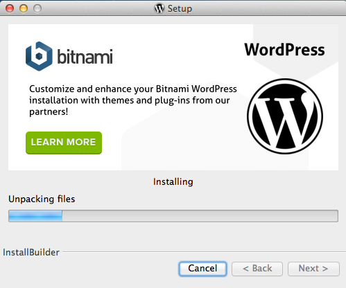
Once installation is complete, you’ll see a success screen. Click "Finish" to exit the installation and launch WordPress.
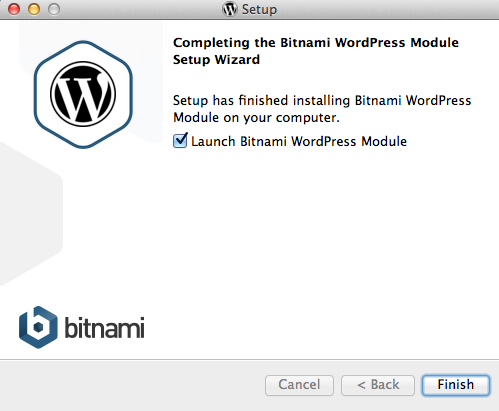
Step 2: Test WordPress
Unresolved directive in <stdin> - include::/app/source-vxost-osx/docs/_includes/common/install-wordpress/step2.adoc[]
Step 3: Create an Editor Account and Start Blogging
Unresolved directive in <stdin> - include::/app/source-vxost-osx/docs/_includes/common/install-wordpress/step3.adoc[]
Learn More
Unresolved directive in <stdin> - include::/app/source-vxost-osx/docs/_includes/common/install-wordpress/resources.adoc[]